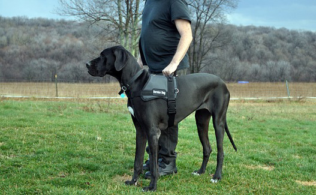

Fun dog facts
Front Page
5 fun facts about dogs
1. Dogs have a sense of time and can predict things such as feeding and walking times.
2. Seeing eye dogs are trained to potty on command to make it easier for their owners to clean up after them

3. oddly enough the popular breed Daschund was bred to fight badgers